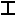

Как
добавить раздел
Кликнуть
по кнопке "Добавить
раздел" на панели
добавления разделов и
конструкций.
Отпустить левую кнопку
мыши.Перевести указатель
мыши на поле для иерархического отображения разделов и конструкций
(правее). Кликнуть левой кнопкой
мыши
еще раз.
Как
добавить
конструкцию.
Конструкции
добавляются к разделу.
Кликнуть левой кнопкой мышки по
кнопке (например "Добавить двутавр"  ) на
панели добавления
разделов и конструкций. Отпустить левую кнопку мыши. Перевести
указатель мышки на
поле для иерархического отображения разделов и конструкций
(правее). Поставить указатель на выбранный
раздел . Кликнуть левой
кнопкой мышки
еще раз.
Как
переименовать
раздел
Кликнуть левой кнопкой мышки по значку раздела или конструкции в поле
для иерархического отображения конструкций и разделов.
После активировании наименования для редактирования, ввести новое.
Наименование конструкции также можно изменить в окне "Расчет предела
огнестойкости".
Как
переименование
конструкцию
Кликнуть,
после изменения статуса ввести новое
наименование или через окно "Расчет
предела огнестойкости".
Как
переместить
конструкцию в другой раздел
Кликнуть левой кнопкой мыши по значку конструкции. Удерживая кнопку,
перевести указатель мыши на выбранный раздел. Отпустить левую кнопку
мыши.
Как
быстро
перейти к конструкции
При отображении в активной таблице данных раздела, перейти к
конструкции можно при двойной клике мыши по выбранной конструкции.
Как
распечать сводную таблицу
Распечать сводную таблицу конструкций можно после экспорта в другую программу.